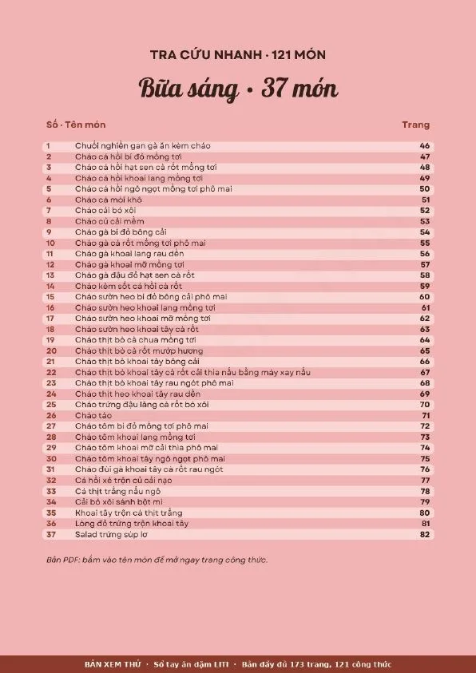
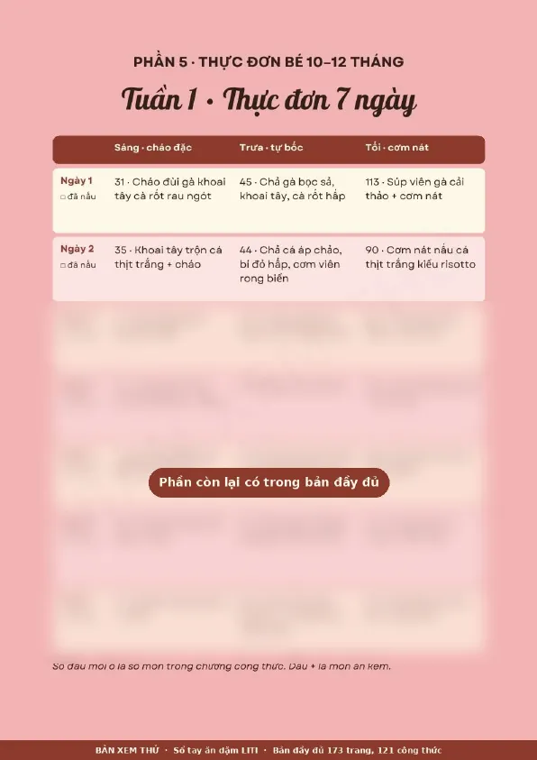
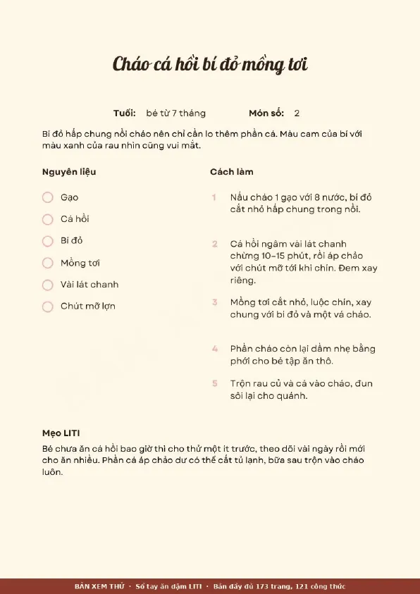

Sách lẻ
Ngôn ngữ tích cực với con
49.000đ
- 5 chương: lắng nghe con, dạy con điều tiết cảm xúc, xử lý hành vi chưa đúng…
- Ví dụ thực tế và mẹo nhanh cho ba mẹ bận rộn
- Xem chi tiết và đọc thử
121 món cho bé 6–12 tháng: lộ trình làm quen cho bé 6–7 tháng, thực đơn 3 bữa 8 tuần cho bé 8–12 tháng kèm giỏ đi chợ. Ba mẹ khỏi phải nghĩ hôm nay nấu gì cho con.
79.000đ · Mua một lần · File PDF 173 trang
Ba mẹ không cần thành đầu bếp. Chỉ cần một cuốn sổ đã nghĩ sẵn hộ.
Sổ xếp sẵn món theo tuần, ghi rõ tuổi ăn của từng món, kèm giỏ đi chợ và lịch sơ chế một buổi cuối tuần. Ba mẹ chỉ việc mua, nấu và đánh dấu đã nấu.
LITI tổng hợp và viết lại từ khoá học "Ăn dặm tôn trọng cùng con", sách "Phương pháp ăn dặm bé chỉ huy" (Baby-Led Weaning) và "Ăn dặm kiểu Nhật". Mọi công thức đã bỏ gia vị và thêm lưu ý an toàn cho bé dưới 1 tuổi. Nguồn ghi đầy đủ ở cuối sổ.
Khi nào bắt đầu, cắt thanh hay cắt viên, phân biệt ọe với hóc, dị ứng, gia vị, tập dùng thìa.
Lộ trình làm quen từng tuần, cách cắt cho bé mới tập, sổ theo dõi món mới.
Mỗi tháng ăn mấy bữa, thô đến đâu, cắt thế nào, món nào thêm vào.
Mỗi tuần một trang giỏ đi chợ, lịch sơ chế cuối tuần và bảng 7 ngày có ô đánh dấu đã nấu.
Cháo đặc buổi sáng, món tự bốc buổi trưa, cơm nát buổi tối, xoay vòng gà, cá, bò, thịt lợn, tôm, trứng.
Mỗi món ghi tuổi bắt đầu, nguyên liệu, các bước làm và mẹo LITI. Bảng tra cứu ở đầu sổ.
Mỗi ô là một món có công thức trong sổ. Số đầu ô là số món để ba mẹ lật tới đúng trang.
Giỏ đi chợ tuần 1: đùi gà, ức gà, cá thịt trắng, trứng, đậu phụ, khoai tây, cà rốt, bí đỏ, cải thảo, rau ngót… Sơ chế một buổi cuối tuần, chia hộp trữ đông.



Mua một lần, đọc mãi. Combo gồm sổ ăn dặm và cuốn Ngôn ngữ tích cực với con.
Mã QR đã điền sẵn số tiền và nội dung chuyển khoản, bạn chỉ cần quét bằng app ngân hàng.
Hoặc chuyển tay: VietinBank · LE THI MINH TAM
100887872745Nội dung đã có sẵn trong mã QR. Nếu chuyển tay, ghi đúng như sau:
AN DAMLITI kiểm tra giao dịch rồi gửi file PDF cho bạn qua Zalo.
0948 849 754Mở ZaloNội dung: AN DAM
Lưu ảnh mã QRĐang xem trong Facebook hay Zalo? Bấm giữ vào mã để lưu ảnh, rồi mở app ngân hàng chọn quét từ ảnh.
LITI gửi file PDF qua Zalo, thường trong vòng 24 giờ sau khi bạn gửi ảnh giao dịch. Chuyển vào cuối tuần thì có thể sang thứ Hai.
Sổ trình bày chữ rõ, chia cột gọn, phóng to trên điện thoại vẫn nét. Bạn có thể mở bản đọc thử 17 trang để xem trước. In ra giấy A4 cũng được.
Nhắn Zalo LITI, mình gửi lại file cho bạn.
Được. Phần 1 và Phần 2 viết cho giai đoạn bắt đầu, lúc bé mới ăn 1–2 bữa. Thực đơn 3 bữa dành cho bé từ 8 tháng. Mỗi công thức đều ghi tuổi bắt đầu. Món ghi từ tháng nào thì bé từ tháng đó trở lên ăn được.
Không. Trong năm đầu, sữa mẹ hoặc sữa công thức vẫn là nguồn dinh dưỡng chính, ăn dặm là để bé làm quen và ăn thêm. Phần 1 của sổ có hẳn một mục về chuyện này.
Không. Tất cả món không nêm muối, đường, mắm hay hạt nêm, đúng khuyến nghị cho bé dưới 1 tuổi.
Bé từ chối một món chưa phải là dị ứng. Món nào bé chưa hợp, ba mẹ tra bảng ở đầu sổ để đổi sang món khác cùng bữa, cùng loại đạm. Nếu bé nổi mẩn, ngừng món đó và hỏi bác sĩ nhi trước khi cho ăn lại. Nếu bé khó thở, sưng môi hoặc mặt, nôn liên tục hay nổi mẩn khắp người, đưa bé đi cấp cứu ngay.